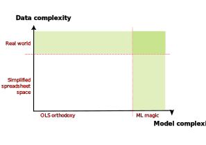
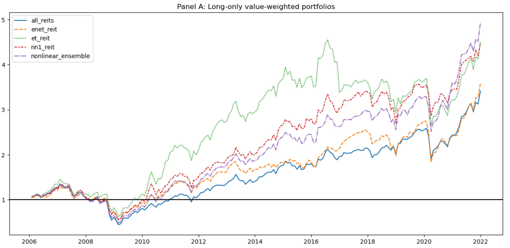
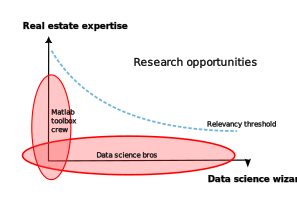

## <span class='transparent70'>Applied ML in property research</span> ## <span class='subtitle transparent70'>— an academic perspective —</span> <br> ## <span class='subtitle transparent70'>Thies Lindenthal</span> ## <span class='subtitle transparent70'>Grosvenor Professor of Real Estate Finance<br>Department of Land Economy / University of Cambridge</span>
## <mark>So much research!</mark> <span class="subtitle"><br><br/><mark>55K papers on Google Scholar on "ML and Real Estate". A success story?<br>Let me share 3 thoughts from an academic perspective. </mark></span>
## <mark>1. The costs will continue to fall</mark><span class="subtitle"><br><mark>Example: <a href='https://github.com/Mozilla-Ocho/llamafile'>Locally hosted LLM model</a></mark></span> </div>
## LLM "wisdom" <span class="subtitle"><br></span> * User: <mark>What is the future of property research in times of ML?</mark> * Llama: - As an AI language model, I can provide some insights into how machine learning (ML) might impact property research in the near future. - One potential area where ML could have a significant impact on property research is data analysis and prediction. For instance, real estate agents and analysts may use ML algorithms to analyze large amounts of historical sales data and predict market trends, such as price fluctuations or changes in demand for specific types of properties. This can help them make more informed decisions when buying, selling, or renting properties. - Another area where ML could be useful is in automating repetitive tasks, such as property valuation or document processing. By using natural language processing (NLP) and computer vision techniques, ML algorithms may be able to quickly analyze large volumes of data and generate accurate reports without human intervention. This can save time and resources for real estate professionals while also reducing the risk of errors. - However, it's important to note that ML is not a silver bullet, and there are still some limitations to its capabilities in property research. For instance, ML algorithms may struggle with interpreting qualitative data or understanding complex market dynamics that cannot be easily quantified. Additionally, ethical considerations must be taken into account when using ML for property research, such as ensuring fairness and avoiding discrimination based on factors like race or gender. - Overall, the future of property research in times of ML is likely to involve a combination of advanced data analysis techniques, automation of repetitive tasks, and careful consideration of ethical implications. As long as these challenges are addressed, ML has the potential to revolutionize the way we conduct property research and make more informed decisions in the real estate industry.
## Rich data are in reach...<span class="subtitle"><br/>So much to learn from looking at buildings, spaces, people... </span> <iframe data-src="https://www.google.com/maps/embed?pb=!4v1615400218848!6m8!1m7!1sfrGO3071bDjlMFWKCuPROg!2m2!1d52.20218228800385!2d0.116240823654906!3f214.30357533449632!4f12.499881249341925!5f0.7820865974627469" data-preload width="900" height="500"></iframe> Note:
<h2>... good algorithms too!<span class="subtitle"><br />Computer vision + ML classification, all available in easy to use libraries.<br /></span></h2> <img src="imgs/research_feature_vectors.png" height=400> * Examples: <a href='https://www.mit.edu/~naik/assets/pdf/naik_etal_aer_16.pdf'>Naik et al. (2016)</a>, <a href='https://link.springer.com/article/10.1007/s11146-021-09845-1'>Lindenthal & Johnson (2021)</a>
Large scale, low cost
Collecting images/feature vectors of each building in the UK.
## 2. Not every problem cries for ML!<span class="subtitle"><br/>Property research rich in opportunities—but often OLS does the job equally well.</span> <div class='figure'>  </div>
## Sheer predictive power available<span class='subtitle'><br>High-dimensional data where functional form is not evident very suitable for ML</span> * Example: REIT returns are partially predictable with ML (Leow & Lindenthal). Traditional regressions fail. <div class='figure'>  </div>
## Black boxes are problematic<span class="subtitle"><br/>Are our systems unbiased and lawful? ML systems need testing! </span> * Example: System testing for ML classifiers (<a href="https://doi.org/10.1111/1540-6229.12416">Wan & Lindenthal, 2022)</a>. What do systems see? <div class='figure'><img src="imgs/house_cars.jpg" height=400></div>
## 3. Combined skills/mixed teams key!<span class="subtitle"><br/>Data science is too important to be left to the data scientists!</span> <div class='figure'>  </div>
## <span class="transparent70"> Entirely new research opportunities</span><span class=" transparent70 subtitle"><br/>What is it that people pay attention to when looking at houses?</span> * <span class="transparent70">New project with Carolin Höltken & Wayne Wan</span> * <span class="transparent70">Let people like/dislike photos of houses</span> * <span class="transparent70">Train an ML model based on personal tastes: Digital twin (sort of).</span> * <span class="transparent70">Which features are attractive? Homogeneous tastes?</span>